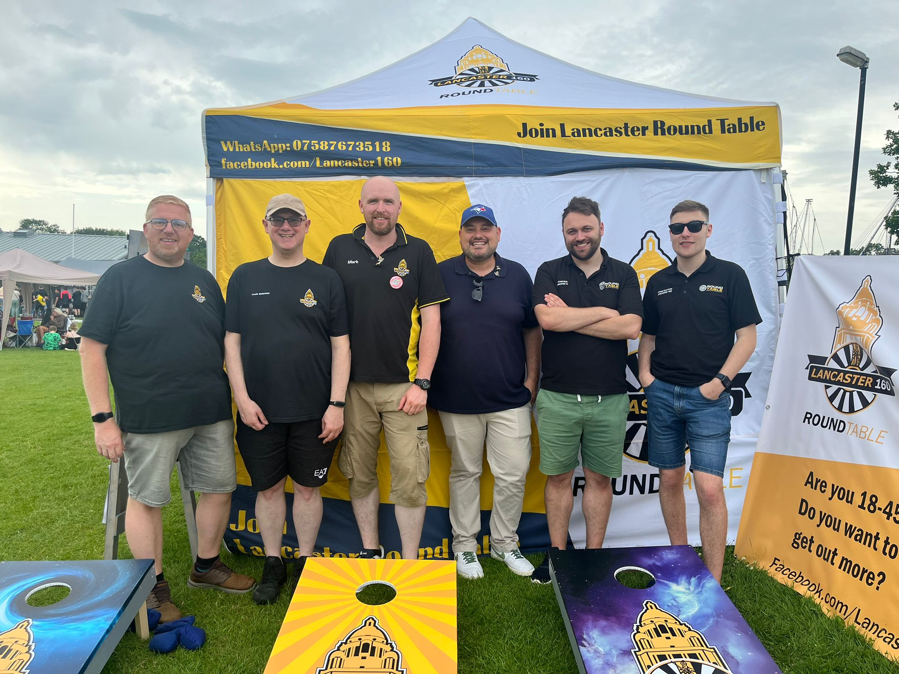
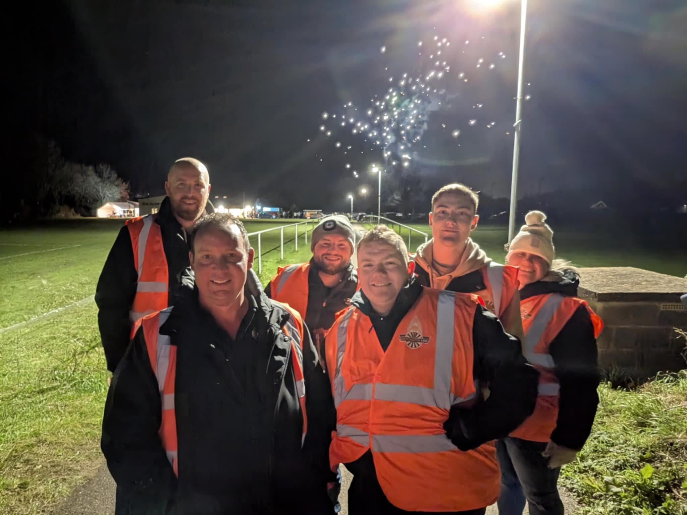
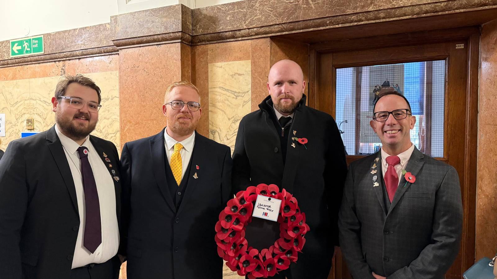
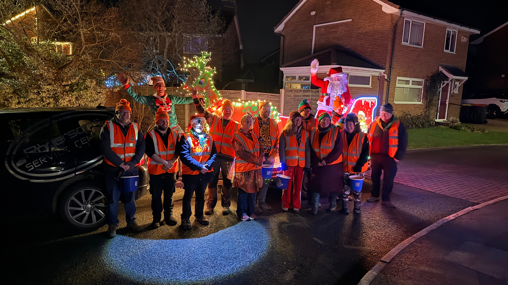

Lancaster Round Table in the Community

Galgate Treat Day
Lancaster Round Table was proud to support Galgate Treat Day by helping with the setup of stalls and activities, as well as running our own stand on the day. Our stand featured fun games for local families and gave us the chance to promote Round Table within the community, while also raising donations in support of Galgate Treat Day.

Galgate Fireworks
Members of Lancaster Round Table volunteered to support the Galgate Fireworks event by stewarding the car park and entrance areas. Our role helped ensure visitors could enter and leave the event safely, contributing to a smooth and enjoyable evening for everyone attending.

Remembrance Day
Lancaster Round Table members attended Remembrance Day to lay a wreath on behalf of the Table, paying our respects to those who have served and sacrificed. It was an important moment of reflection and remembrance, standing alongside the local community to honour their legacy.

Santa’s Sleigh
Lancaster Round Table proudly operates the Santa’s Sleigh event each December, bringing festive cheer to local communities. Our members volunteer their time to drive the sleigh, distribute treats, and spread holiday joy to children and families across the area.
Find out moreCommunity Support Request
Lancaster Round Table is a local social and charitable group of men aged 18–45. We support our community through fundraising, volunteering, and practical help.
Please note: We are not an emergency service and cannot guarantee support for every request.